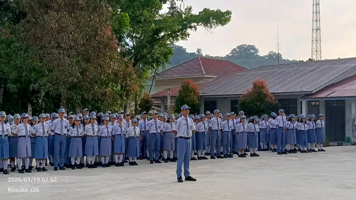

Selamat Datang di Website Sekolah
Website ini menyajikan informasi mengenai SMK Negeri 3 Gunungsitoli sebagai lembaga pendidikan kejuruan yang berkomitmen mencetak lulusan siap kerja, berprestasi, dan berakhlak mulia.


